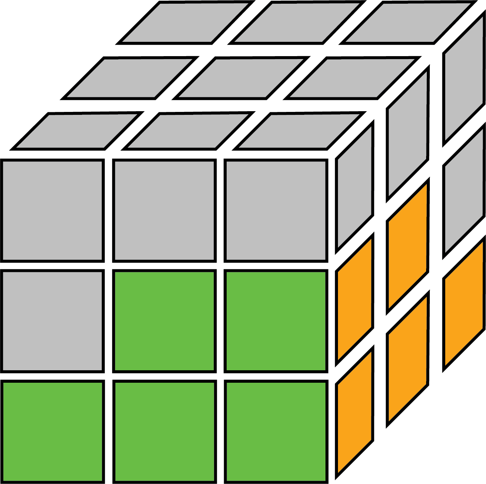
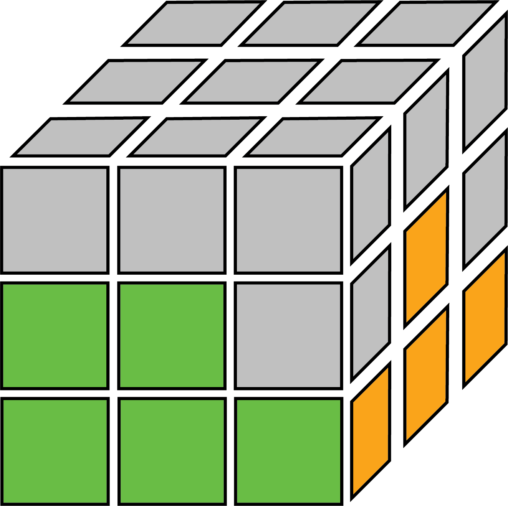

The second layer of the Beginner's Method is point in the solve where many people are no longer able to complete intuitively anymore. However, this step only has 2 algorithms and is probably the easiest step of the solve for people with no prior expirence. From this step onwards, we will need to turn the cube so that the white side is on the bottom and yellow is on top.
For this step, we need to move the non-yellow edge pieces to the correct positions. These pieces are the blue-red, red-green, green-orange, and orange-blue pieces. (You don't really need to remember that). We will need find a edge piece on the top layer and line it up in the way that the algorithm pictures show.
Each of the edges can be in one of these 4 cases:
The 2 algorithms of this step are very simliar, being left and right variations of each other. We can know which one we should use by looking at the top colour of the piece. There are 2 important colours that tell you which case you have for the first 2 cases. The colour facing you on the side piece you are trying to insert deterimines which side you should move the piece to. Hold that side, green in this case, in front. Then, look at the colour on the top of the edge you are trying to insert. In this case, the colour can be red or orange (red is opposite orange). This colour determines which side (use which of the left or right algorithms) that you should move to piece to.
In case the edge you choose in already in the middle layer but flipped or in the wrong spot, like in the 2 other cases, use the algorithm to insert a yellow edge into that spot instead, and the piece should be on the top layer now.
→ Right Algorithm: U R U' R' U' F' U F → Left Algorithm: U' L' U L U F U' F'
I created the images along with everything else on this page myself, so everything on this webpage is definitely copyright free and free to use. I am adding this to the bottom of every page to show off the fixed position navigation bar on shorter pages, and it also makes the website look more professional.